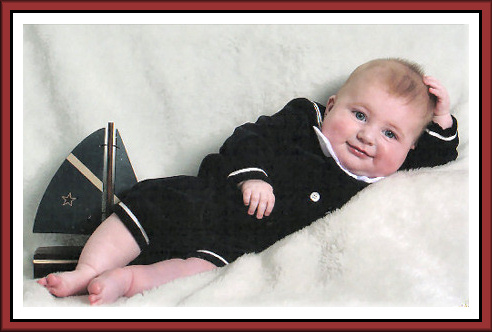
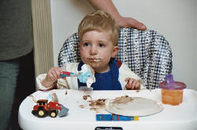

Sailorman Sean 1st Haircut 1st Birthday Party
1st Birthday Party

2nd BirthdayBorn October 25, 2004 — 6 lbs 2 oz, 19½ inches — Brown hair, blue eyes
Welcome Sean Thomas! The son of my daughter Barbara and her husband Tom, Sean arrived on October 25, 2004. These pages follow his journey from newborn to toddler — his first smile, first haircut, first birthday cake (Elmo theme!), his Thomas the Tank Engine 2nd birthday party, and so many precious moments in between. Proud parents Barbara and Tom!